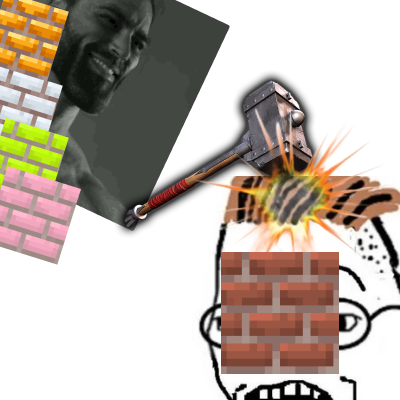
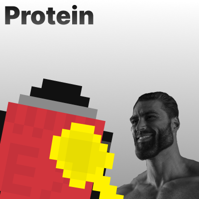
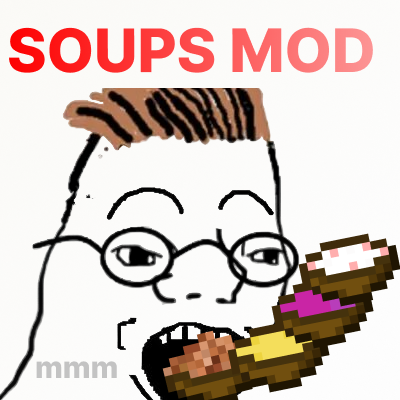
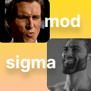
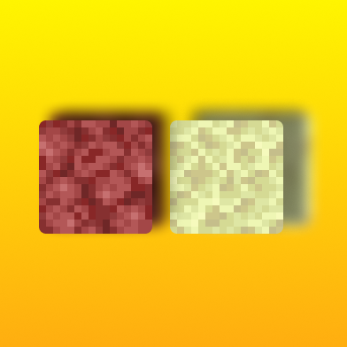

Colored Bricks
Вариации цветных кирпичей и связанных блоков.

Рецепты
Окрашенный кирпич
Поместите базовый кирпич и соответствующий краситель, чтобы получить окрашенный вариант. Количество и расположение зависят от версии.
Гайды
Используйте Shift + Клик для быстрого переноса стаков при массовом крафте.
Protein
Новые продукты с белком и механики питания.

Рецепты
Протеиновый батончик
Семена
Сахар
Мёд
Белковый порошок
Пример схемы. Замените ингредиенты на актуальные для вашей версии мода.
Гайды
Комбинируйте белковые блюда с эффектами регенерации для повышения выживаемости в длительных походах.
More Soups
Ассортимент новых супов.

Рецепты
Овощной суп
Макет крафта для примера. Уточните актуальные ингредиенты в документации мода.
Гайды
Пользуйтесь разнообразием супов: некоторые эффективнее в биомах с холодным климатом благодаря бонусным эффектам.
Sigma Mod
Мобы Sigma/Gigachad, предметы, экипировка и блоки.

Рецепты
Сигма-меч
Сигма-слиток
Сигма-слиток
Палка
Схема для примера. Замените на точные материалы/раскладку вашей версии.
Гайды
Против элитных мобов используйте броню с повышенной стойкостью к отбрасыванию.
Infested End Stone & Netherrack
Заражённые варианты блоков Края и Незера.

Рецепты
Очистка заражённых блоков
Механика зависит от версии. Обычно используется плавка или взаимодействие с антидотом/чистящим средством.
Гайды
Используйте инструменты с зачарованием «Шёлковое касание», чтобы контролировать выпадение заражённых блоков и избежать распространения.
Better Recipes & Trades for Superlfat
В этом разделе появятся рецепты и гайды для следующего мода.
Добавьте скриншоты, список предметов, а также примеры крафтов по мере готовности.